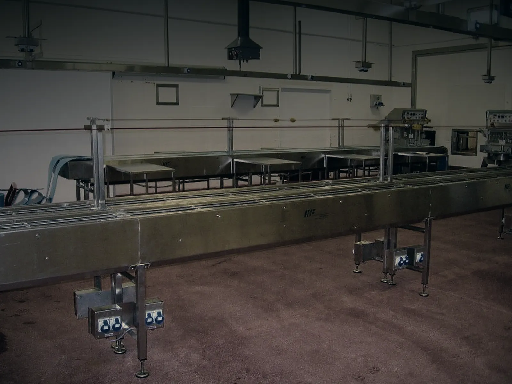
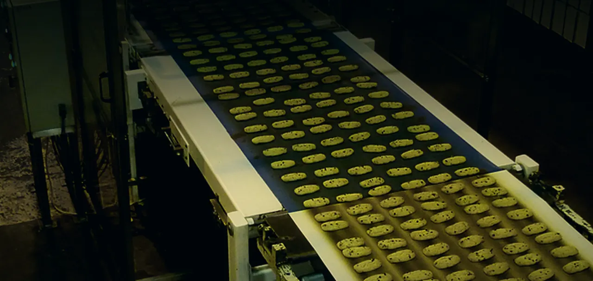
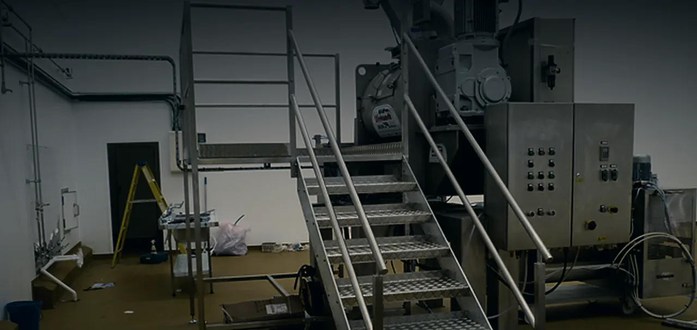
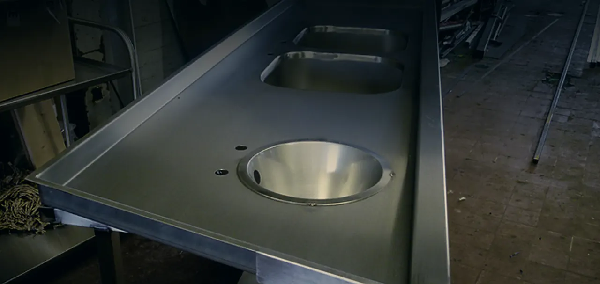
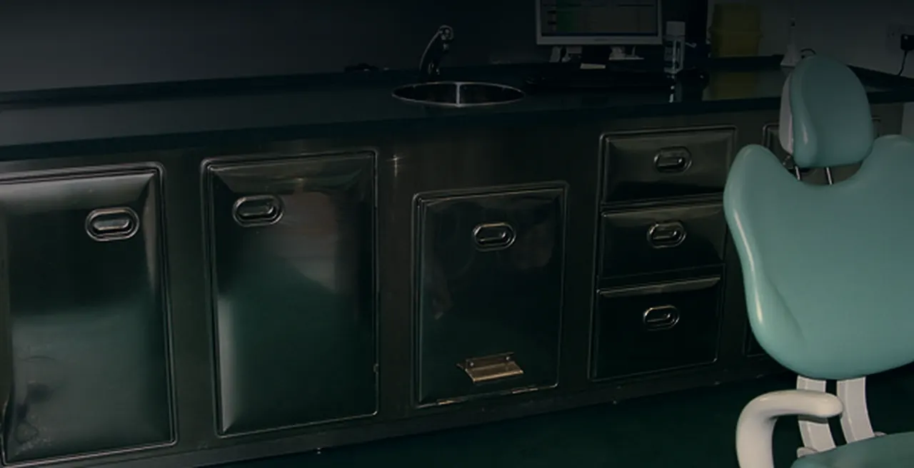

Development notes/Shot list
Shot list
Every photographic section of the site, what it shows today and what to film for it. 19 of 19 still show a placeholder photograph.
| Section | Shows now | To film | Length | Where | Status |
|---|---|---|---|---|---|
Homepage opening, first shothome-weld |  | TIG welding stainless steel, extreme close-up The arc lighting the steel and the welder's glove. Slow slide along the seam. Shoot the same seam wide afterwards. | 10 to 15 s | Marpet workshop | Placeholder still |
Homepage opening, second shothome-detail |  | Finished weld or brushed frame with the Marpet plate, close Slow slide along a finished conveyor side frame, ending on the Marpet logo plate. Raking light from one side. | 6 to 10 s | Marpet workshop, before dispatch | Placeholder still |
Homepage opening, pull back (headline arrives here)home-reveal |  | Wide pull back from the welder to the whole workshop Same scene as the welding close-up, revealed wide: benches, stock, work in progress. Lights on, doors closed, no clutter in the foreground. | 8 to 12 s | Marpet workshop | Placeholder still |
Homepage scroll, chapter 1: Designedhome-design |  | Measuring and marking out Tape and square on sheet or on site, a drawing on the bench, a hand marking a line. Close and medium shots. | 8 to 12 s | Workshop or a client site (with permission) | Placeholder still |
Homepage scroll, chapter 2: Made in the workshophome-workshop |  | Fabrication in progress Folding or cutting sheet, grinding and dressing a weld, fitting a frame together. Sparks welcome. Several short takes. | 8 to 12 s each | Marpet workshop | Placeholder still |
Homepage scroll, chapter 3: Installed on sitehome-site |  | Installation and a finished line running Fitting a section at a client site, then the finished conveyor or line running with product. Needs the client's written permission. | 8 to 12 s | Client site | Placeholder still |
Services page headerpage-services | Workshop wide, work in progress A slow move across the workshop with several jobs on the go. | 8 to 12 s | Marpet workshop | Placeholder still | |
Our Work headerpage-work |  | A completed Marpet line running Slow move along a finished, installed line with product on it. Needs the client's written permission. | 8 to 12 s | Client site | Placeholder still |
About headerpage-about | | Clyde Workshops: the yard, a van loading, the workshop door Establishing shots of the premises and a job leaving for site. | 8 to 12 s | Clyde Workshops | Placeholder still |
Team headerpage-team | | The team at work Hands, tools and faces at work. Only people who have agreed to appear. | 8 to 12 s | Marpet workshop | Placeholder still |
Contact headerpage-contact |  | Quiet workshop detail A slow, calm shot: light on a finished bench or a stack of sheet. Text sits over it, so keep the left side simple. | 8 to 12 s | Marpet workshop | Placeholder still |
About page, film bandband-about | | A fabricator at the bench, then fitting on site Medium shot of hands and tools at work in the workshop, then the same job being fitted at a client site. | 10 to 15 s | Marpet workshop and a client site (with permission) | Placeholder still |
Conveyor systems page headerservice-conveyor-systems | Conveyor systems: work in progress, then the finished job This kind of work being fabricated in the workshop, then the finished job in place. Client sites need written permission. | 8 to 12 s | Workshop and client site | Placeholder still | |
Production lines page headerservice-production-lines | Production lines: work in progress, then the finished job This kind of work being fabricated in the workshop, then the finished job in place. Client sites need written permission. | 8 to 12 s | Workshop and client site | Placeholder still | |
Industrial pipework page headerservice-pipework |  | Industrial pipework: work in progress, then the finished job This kind of work being fabricated in the workshop, then the finished job in place. Client sites need written permission. | 8 to 12 s | Workshop and client site | Placeholder still |
Access platforms page headerservice-access-platforms |  | Access platforms: work in progress, then the finished job This kind of work being fabricated in the workshop, then the finished job in place. Client sites need written permission. | 8 to 12 s | Workshop and client site | Placeholder still |
Catering fabrication page headerservice-catering |  | Catering fabrication: work in progress, then the finished job This kind of work being fabricated in the workshop, then the finished job in place. Client sites need written permission. | 8 to 12 s | Workshop and client site | Placeholder still |
Dentistry equipment page headerservice-dentistry |  | Dentistry equipment: work in progress, then the finished job This kind of work being fabricated in the workshop, then the finished job in place. Client sites need written permission. | 8 to 12 s | Workshop and client site | Placeholder still |
General fabrication page headerservice-general-fabrication | | General fabrication: work in progress, then the finished job This kind of work being fabricated in the workshop, then the finished job in place. Client sites need written permission. | 8 to 12 s | Workshop and client site | Placeholder still |
How to supply footage
- Real Marpet work only. People in shot must have agreed; client sites need written permission.
- Landscape, 4K or 1080p, 25 fps, no audio needed. Steady: tripod, slider or gimbal.
- Keep the left third of the frame calm: headlines sit there.
- Send the original files. They are trimmed to 8 to 15 second loops and compressed for the web (see docs/footage.md).